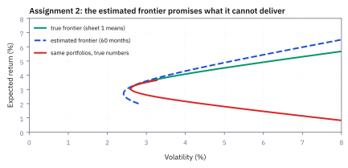
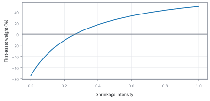
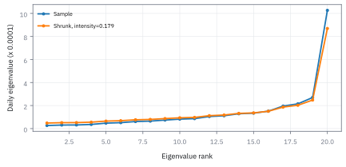
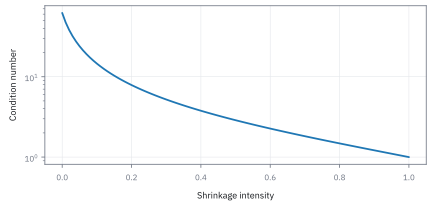
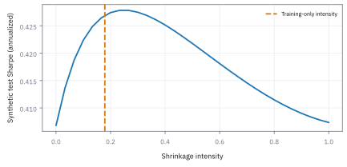
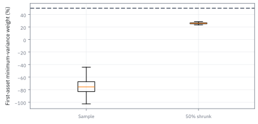

17.8 Covariance Shrinkage (Ledoit-Wolf)
ลดเสียงรบกวนที่ inverse matrix กำลังขยายให้เป็นคำสั่งซื้อขาย
ไฟล์ Assignment 2 ให้ผลตอบแทนรายเดือน 60 เดือนของสามสินทรัพย์ พอร์ตที่ดีที่สุดจากตัวเลขที่ประมาณได้สัญญา Sharpe ratio 0.86 ถ้าค่าเฉลี่ยจริงคือ 6, 2 และ 4% ตามแผ่นแรกของไฟล์ พอร์ตนั้นได้จริงเท่าไร?
เฉลย: ได้จริง 0.59 ทั้งที่ทำได้ถึง 0.85 เพราะ optimizer เทเงินไปที่ตัวที่ค่าเฉลี่ยถูกประมาณสูงเกิน ทางแก้ที่ง่ายที่สุดคือดึงค่าเฉลี่ยทั้งสามเข้าหาค่าเฉลี่ยรวม ได้กลับมา 0.83
ศัพท์ที่ใช้ในหัวข้อนี้
- covariance
- ค่าการเคลื่อนไหวร่วมของผลตอบแทนหลังหักค่าเฉลี่ย ใช้รวมความเสี่ยงของหลายสินทรัพย์เป็น matrix
- shrinkage
- การผสมค่าประมาณจากข้อมูลกับโครงสร้างที่เรียบกว่า ใช้แลก bias บางส่วนกับความผิดพลาดจากการสุ่มที่ลดลง
- Ledoit-Wolf
- วิธีเลือกความเข้มของการผสม covariance จากข้อมูลตามเกณฑ์ความคลาดเคลื่อนของ matrix ใช้ทำให้การประมาณมีเสถียรภาพขึ้นในมิติสูง
- eigenvalue
- ค่าที่บอกขนาดการยืดในทิศทางของ matrix ใช้ตรวจทิศทางที่ inverse อาจขยายเสียงรบกวน
- condition number
- อัตราส่วนขนาดการยืดมากที่สุดต่อขนาดน้อยที่สุดของ positive-definite matrix ใช้วัดความไวของการแก้ระบบต่อความคลาดเคลื่อน
- mean-variance
- การเลือกพอร์ตด้วยค่าเฉลี่ยและ variance ใช้คำนวณน้ำหนักจากสมมติฐานผลตอบแทนและความเสี่ยง
- Sharpe ratio
- ค่าเฉลี่ยผลตอบแทนส่วนเกินเงินสดหารด้วย standard deviation ใช้ประเมินพอร์ตบนข้อมูลที่ไม่ใช้ประมาณน้ำหนัก
- correlation
- covariance ที่ปรับด้วย standard deviation ของสินทรัพย์ทั้งคู่ ใช้กำหนดโครงสร้างเป้าหมายให้แยกจากขนาดความเสี่ยง
สัญลักษณ์ที่ใช้ในหัวข้อนี้
| สัญลักษณ์ | ความหมาย | หน่วย |
|---|---|---|
| $S$ | ตารางความเสี่ยงร่วมที่คำนวณตรงจากข้อมูล ซึ่งแกว่งมากเมื่อข้อมูลน้อย | ผลตอบแทนกำลังสองตามช่วงข้อมูล |
| $F$ | ตารางเป้าหมายที่มีโครงสร้างเรียบง่ายและนิ่ง ใช้ดึงตารางข้างบนเข้าหา | ผลตอบแทนกำลังสองตามช่วงข้อมูล |
| $\widehat\Sigma$ | ตารางหลังผสมสองตัวข้างบนแล้ว คือคำตอบที่นำไปใช้จริง | ผลตอบแทนกำลังสองตามช่วงข้อมูล |
| $\Sigma$ | ตารางจริงของประชากร ที่เรามองไม่เห็นและใช้เป็นเกณฑ์ตัดสินในทฤษฎีเท่านั้น | ผลตอบแทนกำลังสองตามช่วงข้อมูล |
| $\delta$ | ความเข้มของการผสม ศูนย์คือไม่ดึงเลย หนึ่งคือทิ้งข้อมูลไปใช้เป้าหมายล้วน | สัดส่วน |
| $m$ | ค่าเฉลี่ยของแนวทแยง คือระดับความเสี่ยงเฉลี่ยที่ใช้สร้างเป้าหมาย | ผลตอบแทนกำลังสอง |
| $p$ | จำนวนสินทรัพย์ | จำนวน |
| $n$ | จำนวนข้อมูล ยิ่งใกล้ $p$ ยิ่งต้องดึงแรง เพราะตารางดิบเริ่มเชื่อไม่ได้ | จำนวน |
| $x_t$ | ผลตอบแทนของทุกสินทรัพย์ในวันที่ $t$ หลังหักค่าเฉลี่ยแล้ว | สัดส่วน |
| $w$ | น้ำหนักของพอร์ต | สัดส่วน |
| $\mathbf1$ | vector ที่ทุกช่องเป็นหนึ่ง ใช้เขียนเงื่อนไขว่าน้ำหนักรวมกันได้หนึ่ง | ไม่มีหน่วย |
| $\lambda_i$ | ความเสี่ยงที่ทิศทางที่ $i$ รับไป ตัวที่เล็กที่สุดคือตัวที่เชื่อได้น้อยที่สุด | ผลตอบแทนกำลังสอง |
| $\kappa$ | อัตราส่วนระหว่างตัวใหญ่สุดกับเล็กสุดข้างบน ยิ่งสูงยิ่งเปราะเวลากลับตาราง | ไม่มีหน่วย |
| $b^2$ | ขนาดความคลาดเคลื่อนของตารางดิบ ตัวที่การผสมช่วยลดได้ | ผลตอบแทนกำลังสี่ |
| $d^2$ | ระยะห่างระหว่างตารางดิบกับเป้าหมาย ตัวที่การผสมทำให้แย่ลง สองตัวนี้ชนกันที่ $\delta$ | ผลตอบแทนกำลังสี่ |
ที่มาที่ไป: เมื่อคำตอบที่ถูกต้องทางคณิตศาสตร์ใช้งานไม่ได้
ปัญหาที่ค้างมาจากหัวข้อ 17.3 คือน้ำหนักพอร์ตที่คำนวณได้สุดโต่งจนไม่มีใครกล้าใช้ และเปลี่ยนไปคนละเรื่องเมื่อข้อมูลขยับเล็กน้อย
สาเหตุคือตารางความเสี่ยงที่ประมาณจากข้อมูลมีสัญญาณรบกวนปนอยู่ และการกลับตารางขยายสัญญาณรบกวนนั้น โดยเฉพาะในทิศที่ความเสี่ยงวัดได้เกือบเป็นศูนย์
Olivier Ledoit กับ Michael Wolf เสนอทางแก้ในช่วงต้นทศวรรษ 2000 คือผสมตารางที่วัดได้ เข้ากับตารางที่นิ่งแต่หยาบ ในสัดส่วนที่คำนวณจากข้อมูลเอง
แนวคิดนี้กว้างกว่าการจัดพอร์ต มันคือการยอมให้ค่าเบี้ยวเล็กน้อยเพื่อแลกกับความนิ่งที่มากขึ้นมาก การแลกนี้อาจช่วยเมื่อข้อมูลน้อย แต่ผลขึ้นกับ target และความแรงที่เลือก จึงต้องตรวจด้วยข้อมูลนอกชุดที่ใช้ประมาณ
โจทย์ให้อะไรมาบ้าง
แผ่นแรกของไฟล์ Assignment 2 ให้สามสินทรัพย์ ค่าเฉลี่ยต่อปี 6, 2 และ 4% covariance เดียวกับแบบฝึกหัด Assignment 1 ในหัวข้อ 17.3 และเงินสด 1% แผ่นที่สองให้ผลตอบแทนรายเดือน 60 เดือนของสามสินทรัพย์ แล้วให้ประมาณทุกอย่างใหม่จากข้อมูล
หน้านี้ถือว่าแผ่นแรกคือค่าจริง แล้วดูว่า optimizer ทำอะไรกับค่าที่ประมาณ สไลด์ของคอร์สเรียกปัญหานี้ว่า estimation error และเสนอทางแก้สามทาง ดึงค่าที่ประมาณเข้าหาค่าเฉลี่ย ใส่ข้อจำกัดน้ำหนัก และใส่ความเห็นอย่างมีระบบ ซึ่งคือหัวข้อ 17.9
ขั้นที่ 1 — ลองด้วยมือ: สองสินทรัพย์ที่เหมือนกันทุกอย่าง
สไลด์ให้การทดลองในความคิด สองสินทรัพย์ค่าเฉลี่ยจริง 5% ความผันผวน 20% เท่ากัน ไม่สัมพันธ์กัน เงินสด 1% ค่าที่ประมาณได้ของตัวแรกสูงไป 1 จุด ตัวที่สองต่ำไป 1 จุด ค่าเฉลี่ยของความผิดพลาดเป็นศูนย์
ค่าที่ถูกคือแบ่งครึ่ง optimizer กลับเทเงินไปที่ตัวที่ถูกประมาณสูงเกิน และลดตัวที่ถูกประมาณต่ำเกิน ซึ่งผิดทางพอดี ตัวแรกจะให้ผลน้อยกว่าที่คาด ตัวที่สองจะให้มากกว่า พอร์ตสัญญา Sharpe 0.2915 แต่ได้จริง 0.2744 ต่ำกว่าการแบ่งครึ่งเฉย ๆ
ถ้าให้ short ได้ ความผิดพลาดจะถูกขยายยิ่งกว่านี้ Michaud จึงเรียก mean-variance ว่าเครื่องขยายความผิดพลาด ความผิดพลาดที่เฉลี่ยเป็นศูนย์ไม่ได้หักล้างกันในพอร์ต เพราะ optimizer เลือกข้างที่ผิดเสมอ
ขั้นที่ 2 — ทำไมค่าเฉลี่ยประมาณยากกว่า covariance มาก
ค่าเฉลี่ยรายปีที่ประมาณจาก 60 เดือนมี standard error เท่าไร และ covariance มีตัวเลขให้ประมาณกี่ตัว
สิบสองเดือนคูณความผันผวนรายเดือนหารรากของ 60 เท่ากับความผันผวนรายปีหารราก 5 ห้าปีของข้อมูลจึงบอกค่าเฉลี่ยได้แค่บวกลบ 4 จุด ค่าที่ประมาณได้ของตัวแรก −0.52% ห่างจาก 6% แค่ 1.63 เท่าของ standard error เป็นความคลาดธรรมดา ไม่ใช่ข้อมูลเสีย
covariance ของ $d$ สินทรัพย์มี $d(d+1)/2$ ตัว หุ้น 500 ตัวมี 125,250 ตัว ข้อมูลรายวันราวหนึ่งปีหรือ 250 วันเทรดมีแค่ 125,000 จุด ตารางที่ประมาณจึงกลับด้านไม่ได้ตามหัวข้อ 15.3 แต่เทียบกันแล้ว covariance ของไฟล์นี้ประมาณได้ใกล้กว่าค่าเฉลี่ยมาก เพราะมันเฉลี่ยกำลังสองของการขยับทุกเดือน ไม่ใช่แค่ทิศ
ขั้นที่ 3 — แผ่นที่สองของไฟล์: พอร์ตจากค่าที่ประมาณ
แผ่นที่สองคิดค่าเฉลี่ยต่อปีด้วย AVERAGE คูณ 12 และ covariance ต่อปีจาก 60 เดือน แล้วหาพอร์ตที่ดีที่สุดเมื่อมีเงินสด 1% ตามขั้นที่ 8 ของหัวข้อ 17.3
covariance ที่ประมาณใกล้ของจริงพอควร 0.0056 เทียบ 0.008 และ −0.0020 เทียบ −0.002 แต่ค่าเฉลี่ยกลับเครื่องหมายสองตัว optimizer เทเงิน 78% ไปที่สินทรัพย์ที่สองซึ่งดูดีที่สุดในข้อมูล และสัญญา Sharpe 0.864 สูงกว่าที่ทำได้จริงด้วยซ้ำ
วัดด้วยตัวเลขจริง พอร์ตนี้ได้ผลตอบแทน 2.688% ความผันผวน 2.882% Sharpe 0.586 ต่ำกว่า 0.851 ของพอร์ตที่ดีที่สุดจริงถึงหนึ่งในสาม ถ้าจำกัดความผันผวนไว้ 5% แบบในไฟล์ ช่องว่างก็ถูกขยายตามเงินกู้ไปด้วย
ขั้นที่ 4 — ดึงค่าเฉลี่ยเข้าหาค่าเฉลี่ย
สไลด์เสนอสูตรของ James และ Stein ผสมค่าที่ประมาณของแต่ละตัวกับค่าเฉลี่ยของทุกตัว ด้วยน้ำหนัก $\alpha$ ระหว่างศูนย์ถึงหนึ่ง
ดึงครึ่งทางได้ Sharpe จริงขึ้นเป็น 0.615 ดึงจนเท่ากันหมดได้ 0.834 เกือบถึง 0.851 เมื่อค่าเฉลี่ยเท่ากันทุกตัว optimizer ไม่มีอะไรให้ไล่ตาม จึงเลือกพอร์ตจาก covariance ล้วน ๆ ซึ่งประมาณได้ดีกว่า
ในไฟล์นี้การทิ้งข้อมูลค่าเฉลี่ยไปเลยชนะการเชื่อมัน เพราะข้อมูลห้าปีบอกค่าเฉลี่ยได้แค่บวกลบ 4 จุด ขั้นถัดไปใช้ความคิดเดียวกันกับ covariance ซึ่งสไลด์เขียนเป็น $\alpha\hat V+(1-\alpha)mI$ ตรงกับ $\delta=1-\alpha$ ของหน้านี้
Figure 17.8a — frontier ที่ประมาณสัญญาเกินจริง

เส้นเขียวคือ frontier จากค่าจริงในแผ่นแรก เส้นประคือ frontier จากค่าที่ประมาณ 60 เดือน เส้นแดงคือพอร์ตชุดเดียวกับเส้นประ แต่วัดด้วยค่าจริง ยิ่งไล่ผลตอบแทนตามค่าที่ประมาณ ผลตอบแทนจริงยิ่งลด
ขั้นที่ 5 — ผสมกับ matrix ที่มีโครงสร้างง่าย
แนวคิดคือเอาค่าที่วัดได้แต่มี noise มาผสมกับค่าที่นิ่งแต่หยาบ ผลลัพธ์มักดีกว่าทั้งสองตัวเดี่ยว ๆ
ของที่ใส่เข้าไปคือค่าเฉลี่ยของช่องแนวทแยง แล้วสร้าง target แบบ scaled identity ซึ่งให้ variance เท่ากันและการเคลื่อนไหวร่วมเป็นศูนย์
ผลนี้ต่างจาก constant-correlation target ใน Ledoit–Wolf บางแบบ จึงต้องบอกว่าใช้ target ใดทุกครั้ง
ขั้นที่ 6 — นิยามของการผสม และผลที่ตามมาต่อทิศที่เกือบศูนย์
สองก้อนนี้เป็น นิยาม ของสิ่งที่เราทำ กับตัวเลขที่ใช้วัดผล การผสมกับตารางเอกลักษณ์ไม่เปลี่ยนทิศทางเลย เพราะตารางนั้นใช้ทิศร่วมกับทุกตาราง สิ่งที่เปลี่ยนคือค่าที่คู่กับแต่ละทิศเท่านั้น ตามบรรทัดแรก ผลที่ตามมาอ่านได้ทันที: ทิศที่ค่าเกือบศูนย์ถูกดันขึ้นด้วยส่วนผสมที่เป็นบวก จึงไม่เหลือทิศที่ทำให้อินเวอร์สระเบิด ซึ่งเป็นสาเหตุของน้ำหนักสุดโต่งในหัวข้อ 17.3 และบรรทัดที่สองคือตัวเลขที่ใช้ดูว่าอาการนั้นดีขึ้นแค่ไหน
เพราะ identity ใช้ eigenvectors ร่วมกับทุก matrix สำหรับเป้าหมายนี้จึงเปลี่ยนเฉพาะ eigenvalues
เมื่อค่าเฉลี่ยแนวทแยงบวกและความเข้มบวก ทุก eigenvalue จะบวก แม้ sample covariance เดิม singular
ขั้นที่ 7 — ตัวอย่างรายปีที่น้ำหนักแรงเกินความสบายใจ
ตัวอย่างรายปีสองสินทรัพย์ เริ่มจาก sample covariance ที่วัดมาได้ แล้วสร้าง target จากค่าเฉลี่ยของช่องแนวทแยง
$m$ คือค่าเฉลี่ยของ variance สองตัว target จึงให้ variance เท่ากันทั้งคู่ และให้การเคลื่อนไหวร่วมเป็นศูนย์
สูตรพอร์ตความเสี่ยงต่ำสุดสองสินทรัพย์มาจากหัวข้อ 17.3 น้ำหนักออกมาติดลบ 75% แปลว่าต้องขายยืมตัวแรกหนัก ๆ ซึ่งไม่ใช่พอร์ตที่ผ่านข้อจำกัดห้ามขายยืม
สูตรน้ำหนักมาจากไหน: กางวงเล็บของ $\sigma_p^2$ เหมือนขั้นที่ 4 ของหัวข้อ 17.3 ได้ $(\sigma_1^2+\sigma_2^2-2\sigma_{12})w_1^2-2(\sigma_2^2-\sigma_{12})w_1+\sigma_2^2$ derivative เป็นศูนย์ที่ $w_1=(\sigma_2^2-\sigma_{12})/(\sigma_1^2+\sigma_2^2-2\sigma_{12})$ ตัวเศษติดลบเพราะ covariance 0.019 ใหญ่กว่า variance ของตัวที่สอง 0.01
ขั้นที่ 8 — ผสมครึ่งหนึ่งแล้วคำนวณใหม่
ผสมครึ่งต่อครึ่งคือเฉลี่ยทีละช่อง ช่องแนวทแยงถูกดึงเข้าหา 0.025 ส่วนช่องนอกแนวทแยงถูกดึงเข้าหาศูนย์ เพราะ target ไม่มีการเคลื่อนไหวร่วม
สังเกตว่าช่องนอกแนวทแยงหดจาก 0.019 เหลือ 0.0095 พอดีครึ่งหนึ่ง ขณะที่ช่องแนวทแยงขยับเข้าหากัน จาก 0.04 กับ 0.01 มาเป็น 0.0325 กับ 0.0175
ผลคือน้ำหนักเปลี่ยนจากติดลบ 75% เป็นบวก 25.8065% และตัวที่สองได้ 74.1935% พอร์ตจึงไม่ต้องขายยืมอีกต่อไป
ความเข้มครึ่งหนึ่งใช้เพื่อสาธิตเท่านั้น ยังไม่ใช่ค่าที่ Ledoit-Wolf คำนวณจากข้อมูลจริง
ขั้นที่ 9 — ดู eigenvalue ก่อนและหลังผสม: ทิศไหนที่ inverse กำลังตะโกน
ตัวเลข −75% มาจากไหนกันแน่ ลองแยก matrix เป็นทิศทางกับขนาดตามหัวข้อ 4.6 แล้วดูว่า inverse ขยายทิศไหน
correlation ของสองสินทรัพย์คือ $0.019/(0.20\times0.10)=0.95$ เกือบเป็นตัวเดียวกัน matrix จึงมีทิศหนึ่ง (ประมาณ “ถือตัวหนึ่ง short อีกตัว”) ที่ variance วัดได้แค่ 0.000793 คือความผันผวน 2.8% ต่อปี
การกลับ matrix เอา 1 หารด้วย eigenvalue (หัวข้อ 4.6) ทิศนั้นจึงถูกขยาย 1,261 เท่า เทียบกับ 20 เท่าของอีกทิศ optimizer จึง “เห็น” โอกาสลดความเสี่ยงมหาศาลจากการ short ตัวแรก 75% ทั้งที่ 0.000793 คือตัวเลขที่ข้อมูลสั้นวัดได้แย่ที่สุด
ผสมครึ่งหนึ่งกับ 0.025 ยก eigenvalue เล็กขึ้น 16 เท่า (0.000793 เป็น 0.012896) แต่ตัวใหญ่แค่หดลง 25% นี่คือกลไกทั้งหมด: shrinkage แตะทิศที่เชื่อไม่ได้แรงที่สุด และแตะทิศที่เชื่อได้เบาที่สุด
แล้วเอาไปใช้ทำอะไรได้จริงบ้าง
การผสมค่าที่วัดได้กับค่าที่นิ่ง เป็นวิธีมาตรฐานในการทำให้การจัดพอร์ตใช้งานได้จริง
ใช้แก้ปัญหาที่น้ำหนักจากการจัดพอร์ตออกมาสุดโต่งจนใช้ไม่ได้
ใช้กับพอร์ตที่มีสินทรัพย์มากกว่าจำนวนวันที่มีข้อมูล ซึ่งตารางความเสี่ยงกลับด้านไม่ได้เลย
ใช้เป็นตัวอย่างของหลักการที่กว้างกว่านั้น คือยอมให้ค่าเบี้ยวเล็กน้อยเพื่อให้นิ่งขึ้นมาก
Figure 17.8b — การผสมเปลี่ยนคำสั่งจาก matrix เดียวกัน

น้ำหนักแรกเคลื่อนจาก -75% ไปสู่ 50% เมื่อผสมมากขึ้น เส้นนี้เกิดจาก target ที่เลือก ไม่ใช่หลักฐานว่าน้ำหนักใกล้ครึ่งต่อครึ่งจะชนะตลาด
เลือกความเข้มจากความผิดพลาดของ matrix
ในรูปแบบตัวอย่างที่ทราบค่าเฉลี่ยประชากรเป็นศูนย์และแต่ละวันเป็นอิสระ ใช้ covariance ที่หารด้วยจำนวนตัวอย่าง ประเมินความผันผวนของผลคูณภายนอกแต่ละวันรอบ matrix เฉลี่ย แล้วเทียบกับระยะจาก sample ไป target แนวคิดนี้เป็นรูป plug-in ของการผสมเชิงเส้นแบบ scaled identity ภายใต้เงื่อนไขมิติสูงและ moments ที่เหมาะสม ไม่ใช่คำรับรองกับอนุกรมเวลาทุกชนิด
ขั้นที่ 10 — นิยามของสองปริมาณที่ใช้เลือกความเข้มของการผสม
สามก้อนนี้เป็น นิยาม ของสิ่งที่เราวัด ไม่ใช่ผลที่พิสูจน์ ตัวแรกคือตารางที่วัดได้จากข้อมูล ตัวที่สองวัดว่าตารางนั้นสั่นแค่ไหนจากวันหนึ่งไปอีกวัน และตัวที่สามวัดว่ามันห่างจากเป้าหมายที่จะผสมเข้าไปแค่ไหน การวัดระยะใช้ผลรวมกำลังสองของทุกช่อง ซึ่งเป็นการขยายรูปของความยาวในหัวข้อ 3.4 ไปเป็นตาราง ตรรกะของการเลือกความเข้มคือ ถ้าข้อมูลสั่นมากให้ผสมหนัก แต่ถ้าเป้าหมายอยู่ไกลก็ต้องผสมเบาลง ความเข้มที่เหมาะสมจึงเป็นอัตราส่วนของสองตัวนี้ ไม่ใช่ตัวเลขที่เดาเอา
Frobenius norm คือรากของผลรวมช่อง matrix กำลังสอง ใช้วัดความผิดพลาดรวมทุกคู่ ตัวหารกำลังสองของจำนวนวันเกิดจากการประมาณ variance ของค่าเฉลี่ย
ขั้นที่ 11 — ตัดความเข้มให้อยู่ในโดเมนที่ใช้ได้
สูตรอาจให้ค่าที่ออกนอกช่วงศูนย์ถึงหนึ่ง จึงต้องตัดให้อยู่ในกรอบ และจัดการกรณีที่ตัวหารเป็นศูนย์
หาก sample ใกล้ target เทียบกับความผันผวนของ estimator จะผสมมากขึ้น เมื่อระยะเป็นศูนย์ไม่มีความต่างให้ผสม ไม่ควรหารศูนย์
หากประมาณค่าเฉลี่ยจากข้อมูลด้วย ต้องระบุวิธีหักค่าเฉลี่ยและการแก้ขนาดตัวอย่างของ implementation ที่ใช้
ทางที่สาม: ใส่ข้อจำกัดให้ optimizer
สไลด์เทียบ frontier สามเส้น คือจากค่าจริง จากค่าที่ประมาณ และพอร์ตที่เลือกจากค่าที่ประมาณแต่วัดด้วยค่าจริง ใน 60 เดือนของข้อมูลจำลองหลายชุด เส้นที่ประมาณสูงเกินจริงเสมอ และเส้นที่ได้จริงต่ำกว่าทั้งสอง แต่ละชุดข้อมูลให้เส้นต่างกันมาก
ห้าม short ทำให้น้ำหนักไม่ติดลบ แต่คำตอบมักไปชนมุมของข้อจำกัด จึงยังไวต่อค่าที่ประมาณ จำกัดผลรวมของขนาดน้ำหนักไว้ไม่เกิน 2 ป้องกันการถือยาวและ short หักล้างกันก้อนใหญ่ เส้นที่ได้จริงจึงเข้าใกล้เส้นจริงมาก
แบบ robust ขอให้ผลตอบแทนของพอร์ตผ่านเป้าแม้ค่าเฉลี่ยจริงเป็นค่าที่แย่ที่สุดในวงรีความเชื่อมั่นรอบค่าที่ประมาณ เส้นที่ได้จริงเกาะเส้นจริงแทบพอดี สไลด์ยังเสนอวิธีมองหาช่วงในอดีตที่ตลาดหน้าตาคล้ายวันนี้ แล้วใช้สิ่งที่ตามมาหลังช่วงเหล่านั้นเป็นการพยากรณ์
ทำไมต้อง shrink — ลองกับข้อมูลที่ไม่มีโครงสร้างอะไรเลย
ขอบเขต 0.135 ถึง 2.665 นี้คำนวณจากกฎ Marchenko-Pastur ซึ่งบอกการกระจายของ eigenvalue เมื่อจำนวนสินทรัพย์กับจำนวนวันโตไปพร้อมกัน สูตรขึ้นกับอัตราส่วนสองตัวนี้เท่านั้น
ตรวจเองใน 30 วินาที สร้างข้อมูลสุ่ม 250 วัน หรือราวหนึ่งปีเทรด ของ 100 สินทรัพย์ที่ไม่สัมพันธ์กัน แล้วดู eigenvalue ของ covariance ที่ประมาณได้ ค่าต่ำสุดกับสูงสุดจะตกในช่วงนี้ ถ้าได้หนึ่งทุกตัว แปลว่าเขียนโปรแกรมผิด ไม่ใช่ว่าปัญหานี้ไม่มีจริง
ทดลองในกรณีที่รู้คำตอบอยู่แล้ว สร้างข้อมูลที่สินทรัพย์ทุกตัวเป็นอิสระต่อกันสนิท ความผันผวนเท่ากันหมด ไม่มีปัจจัยร่วม ไม่มีกลุ่ม ไม่มีอะไรให้ค้นพบเลย
ถ้าประมาณ covariance จากข้อมูลได้ถูกต้อง eigenvalue ทุกตัวควรออกมาเท่ากับหนึ่ง เพราะนั่นคือความจริงที่เราใส่เข้าไปเอง
แต่ที่ได้จริงคือ eigenvalue กระจายตั้งแต่ 0.135 ถึง 2.665 ต่างกันเกือบยี่สิบเท่า ทิศที่ดูเหมือนเสี่ยงมากกับทิศที่ดูเหมือนปลอดภัย ทั้งที่ความจริงไม่มีทิศไหนพิเศษเลย
โครงสร้างที่เห็นทั้งหมดเป็นของปลอมที่เกิดจากข้อมูลไม่พอ และอันตรายอยู่ตรงที่ optimizer จะทุ่มเงินไปที่ทิศที่ดูปลอดภัยที่สุด ซึ่งคือทิศที่ประมาณค่าผิดมากที่สุดพอดี
Figure 17.8c — Spectrum หลังลดเสียงรบกวน

ใช้ผลตอบแทนจำลอง 20 สินทรัพย์ 60 วัน ค่าเฉลี่ยศูนย์ที่ทราบและ covariance ประชากรที่กำหนดในโค้ด เส้นหลังผสมดึง eigenvalues เข้าหาค่าเฉลี่ย ทำให้ทิศที่มีค่าต่ำสุดไม่ถูกอินเวอร์สขยายรุนแรงเท่าเดิม
Figure 17.8d — Condition number เป็นเรื่องเสถียรภาพทางตัวเลข

matrix สองสินทรัพย์รายปีของตัวอย่างมี condition number ลดลงเมื่อเพิ่มการผสม แต่ matrix ที่แก้ระบบง่ายยังอาจเป็นตัวแทนตลาดไม่ดี จึงต้องตรวจผลนอกข้อมูลฝึกต่อ
Figure 17.8e — ผลนอกชุดฝึกไม่ได้เพิ่มตามความเข้มเสมอ

น้ำหนักแต่ละจุดใช้ข้อมูลฝึกจำลอง 60 วันเดียวกันแล้วประเมินบนชุดทดสอบอิสระ 2,520 วัน ค่าเฉลี่ยรายวันของทุกสินทรัพย์ในชุดทดสอบสมมติ 0.03% และเงินสดศูนย์ เส้นนี้มีไว้ตรวจความไว ห้ามเลือกยอดแล้วรายงานชุดทดสอบเดิมเป็นหลักฐานยืนยัน
Figure 17.8f — shrinkage ลดความผันผวนของน้ำหนักจาก sample เล็ก

กล่องแต่ละอันมาจาก sample จำลองอิสระ 120 ชุด ชุดละ 24 วัน ภายใต้ covariance ประชากรเดียวกัน การผสม 50% กับ identity target ทำให้น้ำหนัก minimum-variance ตัวแรกกระจุกขึ้นในตัวอย่างนี้ แต่ไม่ได้พิสูจน์ว่าจะให้ผลตอบแทนสูงกว่าในทุกตลาด
covariance ที่นิ่งขึ้นยังไม่แก้ค่าเฉลี่ยที่เปราะบาง
Shrinkage ลดความเสียหายจากการประมาณ covariance แต่ Markowitz ยังตอบสนองแรงต่อค่าเฉลี่ยที่เราคาดเอง Black-Litterman ในหัวข้อถัดไปเริ่มจากน้ำหนักอ้างอิงที่ประกาศ แล้วผสมมุมมองพร้อมความไม่แน่นอนเพื่อไม่ให้ค่าเฉลี่ยหนึ่งบรรทัดยึดทั้งบัญชี
คำตอบ — พอร์ตจากค่าที่ประมาณได้จริงเท่าไร
คำถาม: ไฟล์ Assignment 2 ให้ผลตอบแทนรายเดือน 60 เดือนของสามสินทรัพย์ พอร์ตที่ดีที่สุดจากตัวเลขที่ประมาณได้สัญญา Sharpe ratio 0.86 ถ้าค่าเฉลี่ยจริงคือ 6, 2 และ 4% ตามแผ่นแรกของไฟล์ พอร์ตนั้นได้จริงเท่าไร?
ของที่มี: ขั้นที่ 1 ถึง 4
1 ค่าที่ประมาณได้คือ −0.52, 4.71 และ −0.70% standard error ของค่าเฉลี่ยห้าปีคือ 4, 2 และ 4 จุด
2 พอร์ตสัมผัสจากค่าที่ประมาณคือ 12.7, 78.3 และ 9.1% สัญญา Sharpe 0.864 แต่ได้จริง 0.586
3 พอร์ตที่ดีที่สุดจริงคือ 29.2, 58.3 และ 12.5% Sharpe 0.851
4 ดึงค่าเฉลี่ยครึ่งทางได้ 0.615 ดึงจนเท่ากันได้ 0.834
ตรวจเองใน 10 วินาที: (2.688 − 1) หาร 2.882 ได้ 0.586 และ 8.94% หารราก 5 ได้ 4.0%
แปลว่าอะไร: ตัวเลขที่ optimizer สัญญาเป็นค่าที่ดูในกระจกของข้อมูลตัวเอง มันสูงเกินจริงเสมอ ก่อนเชื่อพอร์ตสุดโต่ง ให้ดึงค่าเฉลี่ยเข้าหาค่าเฉลี่ย ดึง covariance เข้าหาเป้าที่นิ่ง และใส่ข้อจำกัดน้ำหนัก
ตัวอย่างที่สอง — shrink covariance ของสองสินทรัพย์ที่เกือบเป็นตัวเดียวกัน
คำถาม: covariance ที่ประมาณได้ทำให้พอร์ตความเสี่ยงต่ำสุด short สินทรัพย์แรก 75% ถ้าผสมกับเป้าหมาย $0.025I$ ครึ่งต่อครึ่ง ทุน \$10 ล้าน จะวางเงินอย่างไร?
ของที่มี: ขั้นที่ 7 และ 8
1 ก่อนผสม น้ำหนักคือ −75% กับ 175% ต้อง short 7.5 ล้านแล้วซื้ออีกตัว 17.5 ล้าน
2 หลังผสม น้ำหนักคือ 8/31 กับ 23/31 เท่ากับ 2,580,645 และ \$7,419,355
ตรวจเองใน 10 วินาที: 2,580,645 + 7,419,355 = 10,000,000 และเงินรวมทั้งสองฝั่งลดจาก 25 ล้านเหลือ 10 ล้าน
แปลว่าอะไร: การผสมบอกว่าน้ำหนักไวต่อ covariance แค่ไหน แต่ยังไม่ได้พิสูจน์ว่าพอร์ตใหม่จะดีกว่านอกข้อมูลฝึก
ทำให้ matrix สุภาพไม่ได้ทำให้ตลาดสุภาพ
shrinkage ช่วยให้ตัวแก้ระบบเลิกตะโกนด้วยน้ำหนักสุดโต่ง แต่ตลาดไม่ได้เซ็นยอมรับ target ของเรา มันไม่แก้ค่าเฉลี่ยผิด ไม่ลบความเสี่ยงหาง และไม่แทนข้อจำกัดน้ำหนักหรือค่าซื้อขาย ต้องเลือก target วิธีประมาณ และหน้าต่างฝึกก่อนเปิดข้อมูลทดสอบ
ข้อจำกัด: วิธีนี้สมมติอะไร และของจริงเป็นอย่างไร
| เรื่อง | วิธีนี้สมมติว่า | ของจริงเป็นอย่างไร | ผลที่ตามมาเวลาใช้งาน |
|---|---|---|---|
| เป้าหมายที่ผสม | เป้าหมายที่เลือกเหมาะสม | การเลือกเป้าหมายเปลี่ยนผลลัพธ์ | เป้าหมายที่ต่างกันให้พอร์ตที่ต่างกัน และไม่มีตัวไหนถูกที่สุด |
| ความเข้มที่คำนวณได้ | สูตรให้ความเข้มที่ดีที่สุด | สูตรตั้งอยู่บนข้อสมมติที่อาจไม่จริง | ค่าที่ได้เป็นจุดตั้งต้นที่ดี แต่ควรทดสอบค่าอื่นเทียบด้วย |
| สิ่งที่แก้ได้ | แก้ปัญหาการจัดพอร์ตได้ | แก้ได้เฉพาะปัญหาที่มาจากตารางความเสี่ยง | ความคลาดเคลื่อนของผลตอบแทนคาดหวังยังอยู่ครบ และมันใหญ่กว่ามาก |
แถวล่างสำคัญ ปัญหาหลักของการจัดพอร์ตอยู่ที่ผลตอบแทนคาดหวัง ไม่ใช่ที่ตารางความเสี่ยง
คำนวณซ้ำได้
import numpy as np
S2=np.array([[.04,.019],[.019,.01]]);H=.5*S2+.5*.025*np.eye(2)
u=np.linalg.solve(S2,np.ones(2));assert np.allclose(u/u.sum(),[-.75,1.75])
u=np.linalg.solve(H,np.ones(2));assert np.allclose(u/u.sum(),[8/31,23/31])
rng=np.random.default_rng(178);pdim=20;nobs=60
true=.0001*np.eye(pdim)+.00005*np.ones((pdim,pdim))
x=rng.multivariate_normal(np.zeros(pdim),true,nobs)
S=x.T@x/nobs;F=np.trace(S)/pdim*np.eye(pdim)
beta=sum(np.sum((np.outer(row,row)-S)**2) for row in x)/nobs**2
den=np.sum((S-F)**2);delta=min(1.,beta/den) if den>0 else 1.
assert 0<=delta<=1
assert np.linalg.eigvalsh((1-delta)*S+delta*F).min()>0
print('Training-only intensity:',delta)
m2=np.array([.06,.04]);w2=(m2-.01)/(m2-.01).sum() # two identical assets
sp=.2*np.sqrt(w2@w2)
assert np.allclose(w2,[.625,.375]) and abs(sp-.1458)<1e-4
assert abs((w2@m2-.01)/sp-.2915)<1e-4 and abs(.04/sp-.2744)<1e-4 and abs(.04/(.2*np.sqrt(.5))-.2828)<1e-4
mu=np.array([.06,.02,.04]);V=np.array([[.008,-.002,.004],[-.002,.002,-.002],[.004,-.002,.008]])
mh=np.array([-.0051864,.0470574,-.0069862])
Vh=np.array([[.0056,-.0020,.0037],[-.0020,.0022,-.0022],[.0037,-.0022,.0074]])
tan=lambda m,C:(lambda z:z/z.sum())(np.linalg.solve(C,m-.01))
sr=lambda w,m,C:(w@m-.01)/np.sqrt(w@C@w)
wh=tan(mh,Vh)
assert np.allclose(wh,[.1267,.7826,.0907],atol=1e-4) and abs(sr(wh,mh,Vh)-.864)<1e-3
assert abs(sr(wh,mu,V)-.586)<1e-3 and abs(sr(tan(mu,V),mu,V)-.851)<1e-3
for a,target in ((.5,.615),(0.,.834)):
ms=a*mh+(1-a)*mh.mean()
assert abs(sr(tan(ms,Vh),mu,V)-target)<1e-3
assert np.allclose(np.sqrt(np.diag(V))/np.sqrt(5),[.04,.02,.04]) # SE of a 5-year meanโค้ดตรวจตัวอย่างสองสินทรัพย์ที่ shrink covariance ความเข้มแบบ Ledoit-Wolf การทดลองสองสินทรัพย์ที่เหมือนกัน และตัวเลขของ Assignment 2 ทั้งพอร์ตจากค่าที่ประมาณ พอร์ตที่ดีที่สุดจริง และผลของการดึงค่าเฉลี่ย
สรุปที่ใช้ได้จริง
- sample covariance ที่กลับได้อาจยังไวต่อความผิดพลาดมาก
- ระบุ target และวิธีประมาณความเข้ม: scaled identity ไม่เหมือน constant correlation
- เลือกความเข้มจากข้อมูลฝึก แล้วประเมินความเสี่ยง ต้นทุน และผลนอกตัวอย่างแยกกัน